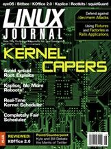

Shutdown Archive web server
Search:
Linux Journal
Issue #184/August 2009

Features
Say Goodbye to Reboots with Ksplice
by Waseem Daher
It's not a dream!
Real-Time Linux Kernel Scheduler
by Ankita Garg
Do real time with Linux and the -rt patchset.
Making Root Unprivileged
by Serge Hallyn
Change the way you think.
Completely Fair Scheduler
by Chandandeep Singh Pabla
Linux's latest scheduler makeover.
Indepth
Anthony Lineberry on /dev/mem Rootkits
by Mick Bauer
The epic battle between good and evil continues.
Columns
Reuven M. Lerner's At the Forge
Fixtures and Factories
Marcel Gagné's Cooking with Linux
The Case of the Missing OS
Dave Taylor's Work the Shell
Looking More Closely at Letter and Word Usage
Mick Bauer's Paranoid Penguin
Building a Secure Squid Web Proxy, Part IV
Kyle Rankin's Hack and /
What Really IRCs Me: Instant Messaging
Kyle Rankin and Bill Childers' Point/Counterpoint
Twitter
Doc Searls' EOF
The Mania of Owning Things
Review
KOffice 2.0
by Bruce Byfield
In Every Issue
Current_Issue.tar.gz
Letters
UPFRONT
New Products
New Projects
Archive Index
Shutdown Archive web server
Search:
Copyright © 1994 - 2018
Linux Journal
. All rights reserved.